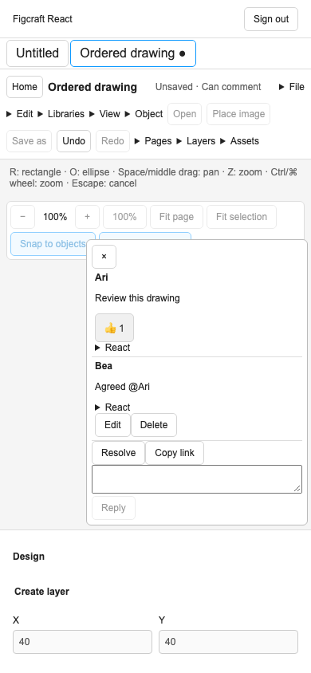

Comment interaction verification
Upstream a2e87433, verified locally on 11 November 2026. The cumulative browser gate is running.
- Native commands
- Six focused tests passed. The independent Rust corpus covers authoring, replies, editing, resolution, reactions, read markers, exact links, list metadata, feedback export and navigation. Additional tests cover scoped identifiers, grant restrictions, cross-page viewing and the UTF-8 feedback budget.
- Browser roles
- Two signed-in production Chromium workflows passed on the first build in 40.6 seconds. A comment-only phone replied, reacted and reopened the thread. A view-only phone read an existing native thread and made zero edit submissions. The local database retained zero accounts, files, objects, rooms or batches.
- Concurrent read and reaction
- In two of five instrumented runs, an older read marker replaced the entire comment after the reaction was accepted. The pinned Rust replica produced exactly the same result. A read prepared from the later thread retained the reaction. Both native outputs are covered by the ordered fixture. Four repetitions of the sequential comment and view workflows passed, including mention completion and downloading the native archive (8/8).
- Build and cumulative scope
- 4,519 pure tests and the current production build passed. The most recent complete browser suite covered the preceding implementation at 2f1e534, with 359/359 passing.

Comment-only phone after mention completion, replying and reacting. The composer fits inside the 390 px viewport.